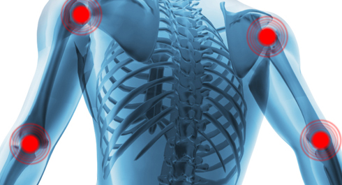

Одно из важных качеств, которое мы хотим развить в участниках за время нашей программы, является умение прислушиваться к своему телу. Большая часть пути уже осталась позади, но впереди еще множество интересных испытаний. А чем выше интенсивность и сложность упражнений, тем важнее прислушиваться к тем сигналам, которые подает организм. Потому что это не только сделает тренировки более эффективными, но и более безопасными, и позволит избежать многих травм, из-за которых пришлось бы брать перерыв в тренировках.
Наверняка уже бывали ситуации, когда на тренировке было чувство, что сегодня она не идет, и лучше прекратить занятие, или наоборот, ощущался какой-то невероятный подъем и после прохождения кругов оставалось ещё много сил в запасе. Такие штуки случаются, и они, по своей природе, слишком индивидуальны, чтобы иметь возможность прописать их в рамках программ с заданным количеством повторений и подходов.
Предположим, что практически сразу после начала тренировки появляется стойкое ощущение, что сегодня как-то не идет. Может, колено/локоть ноет, может, как-то тяжело с дыханием или что-нибудь в таком духе. Конечно, можно не обратить на это внимание, вспомнив о необходимости выполнить заданное число упражнений, и начать заставлять себя тренироваться. Но игнорирование подобных сигналов может привести к травме, растяжению, вывиху или чему-нибудь подобному. Организм пытается сообщить, что сегодня не стоит тренироваться или стоит построить свою тренировку по-другому, в связи с какими-то внутренними обстоятельствами. Но если настаивать, то ему придется подстраиваться, задействуя при этом ресурсы, которые не должны были быть задействованы.
Правда, следует отличать подобные ситуации от банального проявления лени, но ведь в этом и заключается умение прислушиваться к организму. А вот небольшой список сигналов, к которым стоит прислушаться, при их возникновении:
Боль (во время выполнения, отложенная)
Ранее мы уже писали о том, что БОЛИ БЫТЬ НЕ ДОЛЖНО ни во время выполнения упражнения, ни после него. Одной из главных характеристик упражнений в СОТКЕ является их естественность. По сути, это все те движения, которые мы выполняем с самого детства, поэтому при правильном их выполнении никаких проблем возникать не должно, а вот обратный случай как раз свидетельствует о том, что что-то идет не так.
Причин возникновения боли может быть довольно много, и мы не будем рассматривать их в рамках данной статьи, но в очередной раз сделаем акцент на том, что нужно НЕ БОРОТЬСЯ С БОЛЬЮ (использовать обезболивающие мази, гели, тейпы и т.д.), а НАЙТИ ИСТОЧНИК ПРОБЛЕМЫ и разрешить его.
Неприятные ощущения в суставах и мышцах (тянущее чувство, щелчки, хруст)

Если недостаточно размяться перед тренировкой, то суставы могут щелкать или хрустеть в процессе выполнения упражнений, но это должно проходить уже после нескольких повторений/подходов. Кроме того, подобный хруст/щелчки не должны вызывать дискомфорт или неприятные ощущения. В противном случае, проблема может быть серьёзнее, чем кажется, и каждое повторение будет только усугублять сложившуюся ситуацию.
Здесь рекомендация простая, если что-то идет не так, или что-то не нравится, то лучше прекратить тренировку. Допустим, что хруст/щелчок вызван воспалением связки (условно), если дать покой сразу, то через день-два уже все будет нормально и можно будет возвращаться к тренировкам. Если же упорствовать и продолжить заниматься, то каждое движение будет создавать дополнительное воспаление, увеличивая срок восстановления. Особо упорные могут из небольшой травмы (микроразрывы связок, например) сделать себе большую (разрыв связки).
Общее состояние организма (усталость, сонливость, раздражительность, потеря сна)
Собственно говоря, далеко не всегда мы чувствуем себя на все 100%, бодры, веселы и сильны духом. Бывают моменты, когда по плану стоит тренировка, а нам дико хочется спать (накопленная усталость, недосыпы, стрессы и т.п.) или просто накануне готовились к экзамену или сдаче очередного квартального отчета и поэтому не выспались как следует. Магнитные бури, резкие перемены погоды и прочие природные бедствия тоже могут быть виной отсутствия настроя на тренировку. Стоит ли в таких случаях мучить себя и выдавливать все до последней капли пота?
Здесь нельзя дать определенного ответа и все, как и всегда, решается в индивидуальном порядке. Поэтому со своей стороны просто скажем, что если общее состояние организма не очень, то лучше пропустить тренировку, чем проводить её или провести легкую тренировку. Когда не получается сфокусироваться на правильном выполнении упражнений, то повышается риск возникновения травмы. Стоит чуть расслабиться не в тот момент, или не собраться, когда надо было, и жди беды. Скорее всего, конечно, ничего страшного не произойдет, но получить вывих или растяжение в таком состоянии проще пареной репы.
Наша программа была разработана таким образом, чтобы дать возможность заниматься каждый день (за счет адаптивного количества повторений в каждом упражнении в каждом круге), но чтобы она работала так, как задумано, нужно научиться определять это самое количество повторений. В идеале, нужно подбирать его таким образом, чтобы успевать полностью восстановиться к следующей тренировке, но истратить имеющийся запас сил на текущей. Если делать слишком мало повторений, то эффективность программы будет низкой, если слишком много, есть риск перетренироваться. Здесь нужно экспериментировать и следить за результатами, только опытным путем можно определить ответ на вопрос "сколько нужно делать".
То же самое относится и к технике исполнения упражнений. Мы демонстрируем обобщенный, оптимальный вариант, основанный на биомеханике человека. Теоретически, он должен подходить всем, но все мы разные, поэтому если предложенный вариант не подходит, необходимо определить то, что составляет ОСНОВУ упражнения (благо все это строится на школьной физике и мы подробно объясняем что к чему), и постараться найти ему замену самостоятельно.